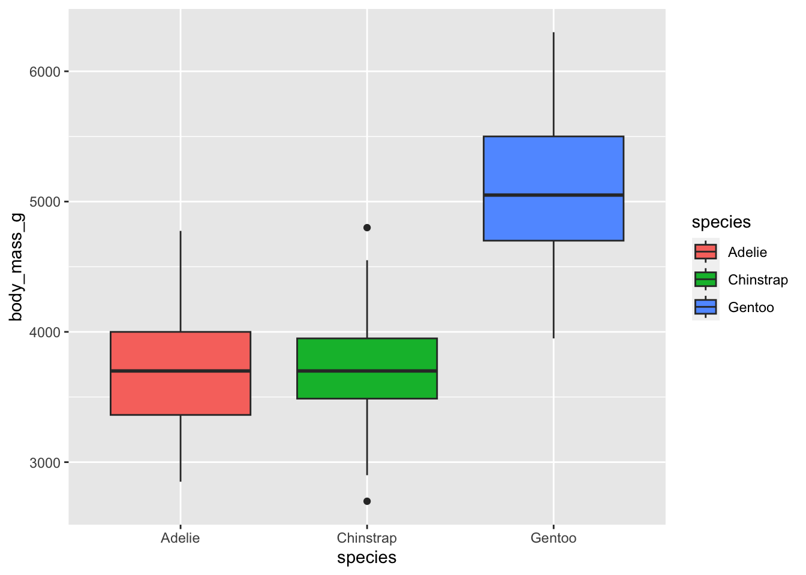
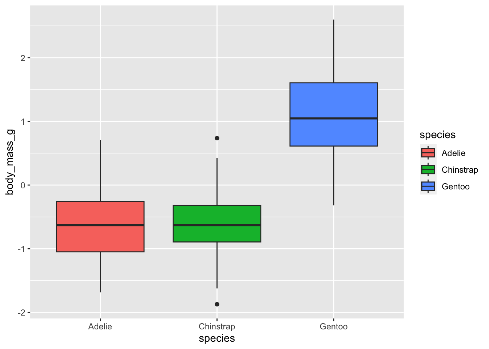
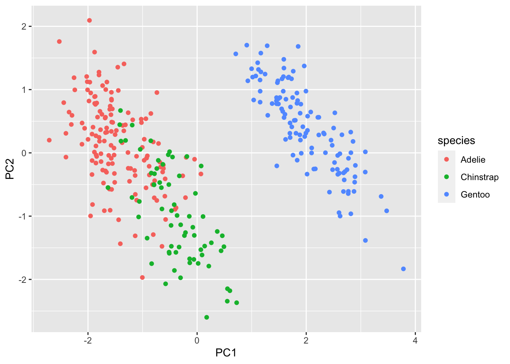
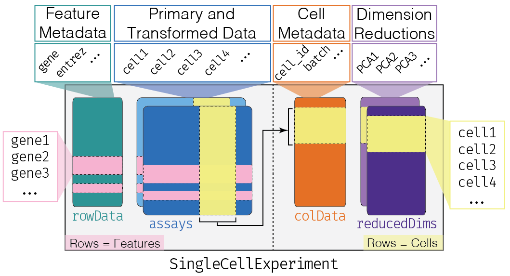
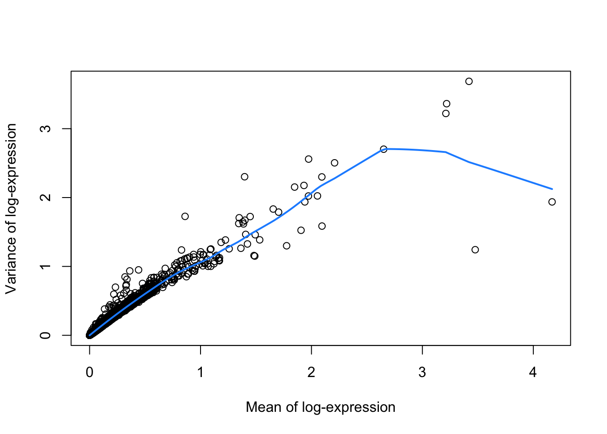
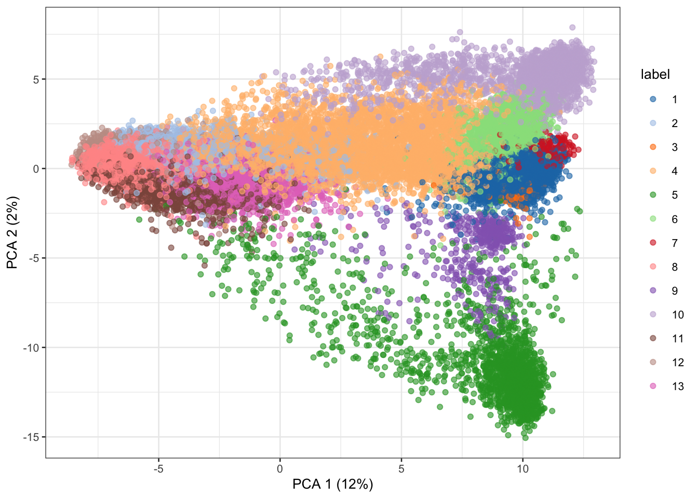
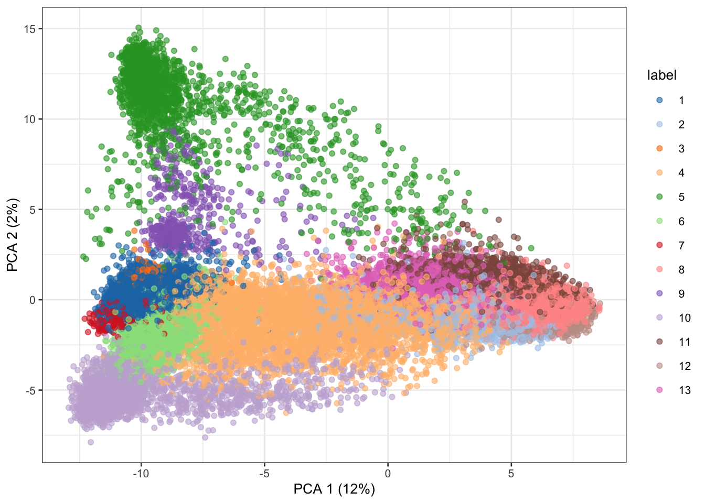

Introduction to single cell data science
Part 1
Learning objectives
- Learn what are genomic data and how are they generated?
- What is a
GRangesobject? - What are some advantages of applying tidy principles to genomic data?
- What is a
SingleCellExperimentobject?
Materials
We will go through the slides available here:
Part 2
Learning objectives
- Remind ourselves of basics of
tidyversefunctions (mostlydplyrandggplot2). - Introduce how to preprocess data and to perform principal components analysis (PCA), a widely used method for dimensionality reduction.
Palmer penguins
In this section, we give an example of using tidyverse functions with the palmerpenguins dataset available as a CRAN package.
[Source: Artwork by Allison Horst]
library(palmerpenguins) # penguins!
suppressPackageStartupMessages({
library(ggplot2) # "grammar of graphics" plots
library(dplyr) # data pliers
})We can select first three rows and two columns:
penguins |>
slice(1:3) |>
select(species, island) # A tibble: 3 × 2
species island
<fct> <fct>
1 Adelie Torgersen
2 Adelie Torgersen
3 Adelie TorgersenAnd estimate the average body mass in grams using summarize():
penguins |>
summarize(ave_mass = mean(body_mass_g, na.rm=TRUE))# A tibble: 1 × 1
ave_mass
<dbl>
1 4202.Rearranging how we omit NA values, we get the same:
penguins |>
na.omit() |>
summarize(ave_mass = mean(body_mass_g))# A tibble: 1 × 1
ave_mass
<dbl>
1 4207.Or we can also drop NA values entirely and modify our original dataset
penguins <- penguins |>
na.omit()
penguins |>
summarize(ave_mass = mean(body_mass_g))# A tibble: 1 × 1
ave_mass
<dbl>
1 4207.A powerful paradigm is to first group and then summarize:
penguins |>
group_by(species, island) |>
summarize(ave_mass = mean(body_mass_g))`summarise()` has grouped output by 'species'. You can override using the
`.groups` argument.# A tibble: 5 × 3
# Groups: species [3]
species island ave_mass
<fct> <fct> <dbl>
1 Adelie Biscoe 3710.
2 Adelie Dream 3701.
3 Adelie Torgersen 3709.
4 Chinstrap Dream 3733.
5 Gentoo Biscoe 5092.Visualization
These data can also be piped into functions for data visualization:
penguins |>
ggplot(aes(species, body_mass_g)) +
geom_boxplot(aes(fill=species))
Dimensionality reduction
Next, we will work towards using dimensionality reduction to visualize the penguins in the principal components space.
For the four columns that contain mm or mass, we apply scale(), which centers and scales each variable.
penguins |>
mutate(across(contains(c("mm","mass")), scale))# A tibble: 333 × 8
species island bill_length_mm[,1] bill_depth_mm[,1] flipper_length_mm[,1]
<fct> <fct> <dbl> <dbl> <dbl>
1 Adelie Torgersen -0.895 0.780 -1.42
2 Adelie Torgersen -0.822 0.119 -1.07
3 Adelie Torgersen -0.675 0.424 -0.426
4 Adelie Torgersen -1.33 1.08 -0.568
5 Adelie Torgersen -0.858 1.74 -0.782
6 Adelie Torgersen -0.931 0.323 -1.42
7 Adelie Torgersen -0.876 1.24 -0.426
8 Adelie Torgersen -0.529 0.221 -1.35
9 Adelie Torgersen -0.986 2.05 -0.711
10 Adelie Torgersen -1.72 2.00 -0.212
# ℹ 323 more rows
# ℹ 3 more variables: body_mass_g <dbl[,1]>, sex <fct>, year <int>Visualizing the scaled data (i.e. y-axis has changed, but distribution is the same).
penguins |>
mutate(across(contains(c("mm","mass")), scale)) |>
ggplot(aes(species, body_mass_g)) +
geom_boxplot(aes(fill=species))
Let’s create a new matrix called scaled with just the four columns scaled.
scaled <- penguins |>
select(contains(c("mm","mass"))) |>
mutate(across(everything(), scale))
scaled# A tibble: 333 × 4
bill_length_mm[,1] bill_depth_mm[,1] flipper_length_mm[,1] body_mass_g[,1]
<dbl> <dbl> <dbl> <dbl>
1 -0.895 0.780 -1.42 -0.568
2 -0.822 0.119 -1.07 -0.506
3 -0.675 0.424 -0.426 -1.19
4 -1.33 1.08 -0.568 -0.940
5 -0.858 1.74 -0.782 -0.692
6 -0.931 0.323 -1.42 -0.723
7 -0.876 1.24 -0.426 0.581
8 -0.529 0.221 -1.35 -1.25
9 -0.986 2.05 -0.711 -0.506
10 -1.72 2.00 -0.212 0.240
# ℹ 323 more rowsThen, we can apply the function prcomp() to calculate the principal components 1 to 4.
Under the hood, the function uses a singular value decomposition of the centered and scaled data matrix (not using eigen on the covariance matrix). Often preferred for numerical accuracy.
scaled |>
prcomp() Standard deviations (1, .., p=4):
[1] 1.6569115 0.8821095 0.6071594 0.3284579
Rotation (n x k) = (4 x 4):
PC1 PC2 PC3 PC4
bill_length_mm 0.4537532 -0.60019490 -0.6424951 0.1451695
bill_depth_mm -0.3990472 -0.79616951 0.4258004 -0.1599044
flipper_length_mm 0.5768250 -0.00578817 0.2360952 -0.7819837
body_mass_g 0.5496747 -0.07646366 0.5917374 0.5846861Some useful things about output:
pca <- scaled |>
prcomp()
names(pca)[1] "sdev" "rotation" "center" "scale" "x" dim(pca$x)[1] 333 4head(pca$x) PC1 PC2 PC3 PC4
[1,] -1.850808 -0.03202119 0.23454869 0.5276026
[2,] -1.314276 0.44286031 0.02742880 0.4011230
[3,] -1.374537 0.16098821 -0.18940423 -0.5278675
[4,] -1.882455 0.01233268 0.62792772 -0.4721826
[5,] -1.917096 -0.81636958 0.69999797 -0.1961213
[6,] -1.770356 0.36567266 -0.02841769 0.5046092Visualize
penguins |>
bind_cols(pca$x) |>
ggplot(aes(PC1, PC2, color=species)) +
geom_point()
Part 3
In this next section, we move into the analysis of single-cell transcriptomics data with a goal of learning the basic steps for data wrangling these data to calculate top principal components where each point is a cell (instead of a penguin).
Learning objectives
- Be able to create a single-cell count matrix and read it into R
- Recognize and define the
SingleCellExperimentS4 class in R/Bioconductor to store single-cell data - Be able to describe a standard workflow for analyzing single-cell data
- Be able to run code for a standard workflow starting from loading a
SingleCellExperimentin R and identifying clusters.
Overview
NGS data from scRNA-seq experiments must be converted into a matrix of expression values.
This is usually a count matrix containing the number of reads (or UMIs) mapped to each gene (row) in each cell (column). Once this quantification is complete, we can proceed with our downstream statistical analyses in R.
Constructing a count matrix from raw scRNA-seq data requires some thought as the term “single-cell RNA-seq” encompasses a variety of different experimental protocols.
SingleCellExperiment Class
One of the main strengths of the Bioconductor project lies in the use of a common data infrastructure that powers interoperability across packages.
Users should be able to analyze their data using functions from different Bioconductor packages without the need to convert between formats.
To this end, the SingleCellExperiment class (from the SingleCellExperiment package) serves as the common currency for data exchange across 70+ single-cell-related Bioconductor packages.
This class implements a data structure that stores all aspects of our single-cell data - gene-by-cell expression data, per-cell metadata and per-gene annotation - and manipulate them in a synchronized manner.

[source]
- Each piece of (meta)data in the
SingleCellExperimentis represented by a separate “slot”.
(This terminology comes from the S4 class system, but that’s not important right now).
If we imagine the SingleCellExperiment object to be a cargo ship, the slots can be thought of as individual cargo boxes with different contents, e.g., certain slots expect numeric matrices whereas others may expect data frames.
If you want to know more about the available slots, their expected formats, and how we can interact with them, check out this chapter.
SingleCellExperiment Example
Let’s show you what a SingleCellExperiment (or sce for short) looks like.
sceclass: SingleCellExperiment
dim: 20006 3005
metadata(0):
assays(1): counts
rownames(20006): Tspan12 Tshz1 ... mt-Rnr1 mt-Nd4l
rowData names(1): featureType
colnames(3005): 1772071015_C02 1772071017_G12 ... 1772066098_A12
1772058148_F03
colData names(10): tissue group # ... level1class level2class
reducedDimNames(0):
mainExpName: endogenous
altExpNames(2): ERCC repeatThis SingleCellExperiment object has 20006 genes and 3005 cells.
We can pull out the counts matrix with the counts() function and the corresponding rowData() and colData():
counts(sce)[1:5, 1:5] 1772071015_C02 1772071017_G12 1772071017_A05 1772071014_B06
Tspan12 0 0 0 3
Tshz1 3 1 0 2
Fnbp1l 3 1 6 4
Adamts15 0 0 0 0
Cldn12 1 1 1 0
1772067065_H06
Tspan12 0
Tshz1 2
Fnbp1l 1
Adamts15 0
Cldn12 0rowData(sce)DataFrame with 20006 rows and 1 column
featureType
<character>
Tspan12 endogenous
Tshz1 endogenous
Fnbp1l endogenous
Adamts15 endogenous
Cldn12 endogenous
... ...
mt-Co2 mito
mt-Co1 mito
mt-Rnr2 mito
mt-Rnr1 mito
mt-Nd4l mitocolData(sce)DataFrame with 3005 rows and 10 columns
tissue group # total mRNA mol well sex
<character> <numeric> <numeric> <numeric> <numeric>
1772071015_C02 sscortex 1 1221 3 3
1772071017_G12 sscortex 1 1231 95 1
1772071017_A05 sscortex 1 1652 27 1
1772071014_B06 sscortex 1 1696 37 3
1772067065_H06 sscortex 1 1219 43 3
... ... ... ... ... ...
1772067059_B04 ca1hippocampus 9 1997 19 1
1772066097_D04 ca1hippocampus 9 1415 21 1
1772063068_D01 sscortex 9 1876 34 3
1772066098_A12 ca1hippocampus 9 1546 88 1
1772058148_F03 sscortex 9 1970 15 3
age diameter cell_id level1class level2class
<numeric> <numeric> <character> <character> <character>
1772071015_C02 2 1 1772071015_C02 interneurons Int10
1772071017_G12 1 353 1772071017_G12 interneurons Int10
1772071017_A05 1 13 1772071017_A05 interneurons Int6
1772071014_B06 2 19 1772071014_B06 interneurons Int10
1772067065_H06 6 12 1772067065_H06 interneurons Int9
... ... ... ... ... ...
1772067059_B04 4 382 1772067059_B04 endothelial-mural Peric
1772066097_D04 7 12 1772066097_D04 endothelial-mural Vsmc
1772063068_D01 7 268 1772063068_D01 endothelial-mural Vsmc
1772066098_A12 7 324 1772066098_A12 endothelial-mural Vsmc
1772058148_F03 7 6 1772058148_F03 endothelial-mural VsmcA typical single-cell workflow
Here, we provide an overview of the framework of a typical scRNA-seq analysis workflow:

In the simplest case, the workflow has the following form:
- We compute quality control metrics to remove low-quality cells that would interfere with downstream analyses. These cells may have been damaged during processing or may not have been fully captured by the sequencing protocol. Common metrics includes the total counts per cell, the proportion of spike-in or mitochondrial reads and the number of detected features.
- We convert the counts into normalized expression values to eliminate cell-specific biases (e.g., in capture efficiency). This allows us to perform explicit comparisons across cells in downstream steps like clustering. We also apply a transformation, typically log, to adjust for the mean-variance relationship.
- We perform feature selection to pick a subset of interesting features for downstream analysis. This is done by modelling the variance across cells for each gene and retaining genes that are highly variable. The aim is to reduce computational overhead and noise from uninteresting genes.
- We apply dimensionality reduction to compact the data and further reduce noise. Principal components analysis is typically used to obtain an initial low-rank representation for more computational work, followed by more aggressive methods like \(t\)-stochastic neighbor embedding for visualization purposes.
- We cluster cells into groups according to similarities in their (normalized) expression profiles. This aims to obtain groupings that serve as empirical proxies for distinct biological states. We typically interpret these groupings by identifying differentially expressed marker genes between clusters.
Quick start (simple)
Here, we use the a droplet-based retina dataset from Macosko et al. (2015), provided in the scRNAseq package. This starts from a count matrix and finishes with clusters in preparation for biological interpretation. We also demonstrate how to identify differentially expressed genes between the clusters.
library(scRNAseq)
sce <- MacoskoRetinaData()see ?scRNAseq and browseVignettes('scRNAseq') for documentationloading from cachesee ?scRNAseq and browseVignettes('scRNAseq') for documentationloading from cache# Quality control (using mitochondrial genes).
library(scater)Loading required package: scuttleis.mito <- grepl("^MT-", rownames(sce)) # find mitochondrial genes
qcstats <- perCellQCMetrics(sce, subsets=list(Mito=is.mito)) # calculate QC metrics
filtered <- quickPerCellQC(qcstats, percent_subsets="subsets_Mito_percent") # filter base on QC metrics
sce <- sce[, !filtered$discard] # subset object for post-QC analyses
# Normalization.
sce <- logNormCounts(sce)
# Feature selection (which genes are most important)?
library(scran)
dec.retina <- modelGeneVar(sce)
hvg <- getTopHVGs(dec.retina, prop=0.1)
# Visualizing the fit:
fit.retina <- metadata(dec.retina)
plot(fit.retina$mean, fit.retina$var, xlab="Mean of log-expression",
ylab="Variance of log-expression")
curve(fit.retina$trend(x), col="dodgerblue", add=TRUE, lwd=2)
# PCA
library(scater)
set.seed(1234)
sce <- runPCA(sce, ncomponents=25, subset_row=hvg)
# Clustering.
library(bluster)
colLabels(sce) <- clusterCells(sce, use.dimred='PCA',
BLUSPARAM=NNGraphParam(cluster.fun="louvain")) # Visualization of PC1 vs PC2
plotPCA(sce, colour_by="label")
# UMAP visualization
sce <- runUMAP(sce, dimred = 'PCA')
plotUMAP(sce, colour_by="label")
For more information
If you could like to know more, check out this book:
Part 4
Last, we will briefly highlight the tidySingleCellExperiment package (https://www.bioconductor.org/packages/SingleCellExperiment) that allows you to leverage functions from dplyr, tidyr, and ggplot2 with a SingleCellExperiment object.
This package is part of a large set of packages called tidyomics, which bridges the two worlds of tidy principles in R with Bioconductor.
It is similar to tidyverse in that it installs a series of packages that are designed to work with different types of objects in Bioconductor. Specifically, it installs:
plyranges= for data withGRangestidybulk= for bulk RNA-sequencing datatidySummarizedExperiment= for data in aSummarizedExperimentobjecttidySingleCellExperiment= for data in aSingleCellExperimentobjecttidySpatialExperiment= for data in aSpatialExperimentobjecttidyseurat= to bring Seurat to the tidyversenullranges= to generate of sets ofGRrangesrepresenting the null hypothesis
For more information:
- manuscript: https://doi.org/10.1101/2023.09.10.557072
- to install
tidyomics: https://github.com/tidyomics/tidyomics
remotes::install_github("tidyomics/tidyomics")Overview
suppressPackageStartupMessages({
library(tidySummarizedExperiment) # allow dplyr
})sce |>
addPerCellQC(subsets=list(Mito=is.mito)) |>
colData()DataFrame with 45877 rows and 10 columns
cell.id cluster sizeFactor label sum
<character> <integer> <numeric> <factor> <numeric>
r1_GGCCGCAGTCCG r1_GGCCGCAGTCCG 2 28.0131 1 37487
r1_CTTGTGCGGGAA r1_CTTGTGCGGGAA 2 23.9479 1 32047
r1_GCGCAACTGCTC r1_GCGCAACTGCTC 2 21.0343 1 28148
r1_GATTGGGAGGCA r1_GATTGGGAGGCA 2 15.2197 1 20367
r1_CCTCCTAGTTGG r1_CCTCCTAGTTGG NA 14.6167 1 19560
... ... ... ... ... ...
p1_TCAAAAGCCGGG p1_TCAAAAGCCGGG 24 0.610523 13 817
p1_ATTAAGTTCCAA p1_ATTAAGTTCCAA 34 0.610523 5 817
p1_CTGTCTGAGACC p1_CTGTCTGAGACC 2 0.610523 1 817
p1_TAACGCGCTCCT p1_TAACGCGCTCCT 24 0.609776 11 816
p1_ATTCTTGTTCTT p1_ATTCTTGTTCTT 24 0.609776 8 816
detected subsets_Mito_sum subsets_Mito_detected
<integer> <numeric> <integer>
r1_GGCCGCAGTCCG 7243 427 14
r1_CTTGTGCGGGAA 6933 503 15
r1_GCGCAACTGCTC 6397 460 13
r1_GATTGGGAGGCA 5740 326 11
r1_CCTCCTAGTTGG 5779 264 9
... ... ... ...
p1_TCAAAAGCCGGG 537 13 4
p1_ATTAAGTTCCAA 574 10 5
p1_CTGTCTGAGACC 637 24 7
p1_TAACGCGCTCCT 488 27 5
p1_ATTCTTGTTCTT 484 16 4
subsets_Mito_percent total
<numeric> <numeric>
r1_GGCCGCAGTCCG 1.13906 37487
r1_CTTGTGCGGGAA 1.56957 32047
r1_GCGCAACTGCTC 1.63422 28148
r1_GATTGGGAGGCA 1.60063 20367
r1_CCTCCTAGTTGG 1.34969 19560
... ... ...
p1_TCAAAAGCCGGG 1.59119 817
p1_ATTAAGTTCCAA 1.22399 817
p1_CTGTCTGAGACC 2.93758 817
p1_TAACGCGCTCCT 3.30882 816
p1_ATTCTTGTTCTT 1.96078 816# Identify variable genes with scran
variable_genes <-
sce %>%
modelGeneVar() %>%
getTopHVGs(prop=0.1)# Perform PCA with scater
retina_pca <-
sce %>%
runPCA(subset_row=variable_genes)
plotPCA(retina_pca, colour_by="label")
Session Info
sessionInfo()R version 4.3.1 (2023-06-16)
Platform: aarch64-apple-darwin20 (64-bit)
Running under: macOS Ventura 13.4.1
Matrix products: default
BLAS: /Library/Frameworks/R.framework/Versions/4.3-arm64/Resources/lib/libRblas.0.dylib
LAPACK: /Library/Frameworks/R.framework/Versions/4.3-arm64/Resources/lib/libRlapack.dylib; LAPACK version 3.11.0
locale:
[1] en_US.UTF-8/en_US.UTF-8/en_US.UTF-8/C/en_US.UTF-8/en_US.UTF-8
time zone: America/New_York
tzcode source: internal
attached base packages:
[1] stats4 stats graphics grDevices utils datasets methods
[8] base
other attached packages:
[1] tidySummarizedExperiment_1.10.0 bluster_1.10.0
[3] scran_1.28.2 scater_1.28.0
[5] scuttle_1.9.4 scRNAseq_2.14.0
[7] SingleCellExperiment_1.22.0 SummarizedExperiment_1.30.2
[9] Biobase_2.60.0 GenomicRanges_1.52.0
[11] GenomeInfoDb_1.36.3 IRanges_2.34.1
[13] S4Vectors_0.38.1 BiocGenerics_0.46.0
[15] MatrixGenerics_1.12.3 matrixStats_1.0.0
[17] dplyr_1.1.3 ggplot2_3.4.3
[19] palmerpenguins_0.1.1
loaded via a namespace (and not attached):
[1] rstudioapi_0.15.0 jsonlite_1.8.7
[3] magrittr_2.0.3 ggbeeswarm_0.7.2
[5] GenomicFeatures_1.52.2 farver_2.1.1
[7] rmarkdown_2.24 BiocIO_1.10.0
[9] zlibbioc_1.46.0 vctrs_0.6.3
[11] memoise_2.0.1 Rsamtools_2.16.0
[13] DelayedMatrixStats_1.22.6 RCurl_1.98-1.12
[15] htmltools_0.5.6 S4Arrays_1.0.6
[17] progress_1.2.2 AnnotationHub_3.8.0
[19] curl_5.0.2 BiocNeighbors_1.18.0
[21] htmlwidgets_1.6.2 plotly_4.10.2
[23] cachem_1.0.8 GenomicAlignments_1.36.0
[25] igraph_1.5.1 mime_0.12
[27] lifecycle_1.0.3 pkgconfig_2.0.3
[29] rsvd_1.0.5 Matrix_1.6-1
[31] R6_2.5.1 fastmap_1.1.1
[33] GenomeInfoDbData_1.2.10 shiny_1.7.5
[35] digest_0.6.33 colorspace_2.1-0
[37] AnnotationDbi_1.62.2 dqrng_0.3.1
[39] irlba_2.3.5.1 ExperimentHub_2.8.1
[41] RSQLite_2.3.1 beachmat_2.16.0
[43] filelock_1.0.2 labeling_0.4.3
[45] fansi_1.0.4 httr_1.4.7
[47] abind_1.4-5 compiler_4.3.1
[49] bit64_4.0.5 withr_2.5.0
[51] BiocParallel_1.34.2 viridis_0.6.4
[53] DBI_1.1.3 biomaRt_2.56.1
[55] rappdirs_0.3.3 DelayedArray_0.26.7
[57] rjson_0.2.21 tools_4.3.1
[59] vipor_0.4.5 beeswarm_0.4.0
[61] interactiveDisplayBase_1.38.0 httpuv_1.6.11
[63] glue_1.6.2 restfulr_0.0.15
[65] promises_1.2.1 grid_4.3.1
[67] cluster_2.1.4 generics_0.1.3
[69] gtable_0.3.4 tidyr_1.3.0
[71] ensembldb_2.24.0 data.table_1.14.8
[73] hms_1.1.3 metapod_1.7.0
[75] BiocSingular_1.16.0 ScaledMatrix_1.8.1
[77] xml2_1.3.5 utf8_1.2.3
[79] XVector_0.40.0 RcppAnnoy_0.0.21
[81] ggrepel_0.9.3 BiocVersion_3.17.1
[83] pillar_1.9.0 stringr_1.5.0
[85] limma_3.56.2 later_1.3.1
[87] BiocFileCache_2.8.0 lattice_0.21-8
[89] rtracklayer_1.60.1 bit_4.0.5
[91] tidyselect_1.2.0 locfit_1.5-9.8
[93] Biostrings_2.68.1 knitr_1.44
[95] gridExtra_2.3 ProtGenerics_1.32.0
[97] edgeR_3.42.4 xfun_0.40
[99] statmod_1.5.0 stringi_1.7.12
[101] lazyeval_0.2.2 yaml_2.3.7
[103] evaluate_0.21 codetools_0.2-19
[105] tibble_3.2.1 BiocManager_1.30.22
[107] cli_3.6.1 uwot_0.1.16
[109] xtable_1.8-4 munsell_0.5.0
[111] Rcpp_1.0.11 dbplyr_2.3.3
[113] png_0.1-8 XML_3.99-0.14
[115] parallel_4.3.1 ellipsis_0.3.2
[117] blob_1.2.4 prettyunits_1.1.1
[119] AnnotationFilter_1.24.0 sparseMatrixStats_1.12.2
[121] bitops_1.0-7 viridisLite_0.4.2
[123] scales_1.2.1 purrr_1.0.2
[125] crayon_1.5.2 rlang_1.1.1
[127] KEGGREST_1.40.0